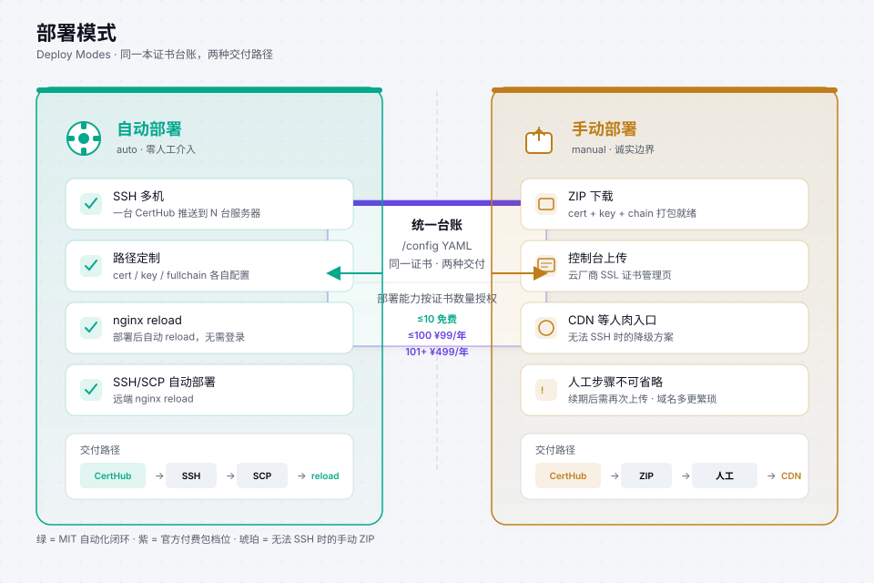

CertHub
CertHubCertificate deploy证书部署
One certificate entry → many landing targets. SSH where you have a box; ZIP when only a human can upload.一条证书 → 多个落地目标。有 SSH 就自动推；只能人肉就打 ZIP。
manual ZIP for console upload. CertHub Pro: adds certificate capacity and production delivery features; direct cloud/CDN deployment remains in validation — see Pro.
Community：SSH/SCP + nginx reload，以及 manual ZIP 手传。CertHub Pro：按证书槽位增加容量与生产交付能力；云平台／CDN 直推仍在验证中——见商业版。

Pattern A · One cert, many SSH hosts模式 A · 一证多机
Issue a wildcard once. Then deploy each subdomain / host that should receive files — different server_id or paths are normal.泛域名签一次。再对每个需要落盘的子域 / 主机分别 deploy——不同 server_id 或路径很常见。
# after renew example.com (covers *.example.com) $ docker exec acme-ssl-manager /scripts/cert-manager.sh deploy shop.example.com server_prod_01 $ docker exec acme-ssl-manager /scripts/cert-manager.sh deploy api.example.com server_prod_01 $ docker exec acme-ssl-manager /scripts/cert-manager.sh deploy www.example.com server_edge_02 # or batch auto targets $ docker exec acme-ssl-manager /scripts/cert-manager.sh deploy-all
- Match
deploy_dir/ filenames to real nginx ssl paths.deploy_dir/ 文件名要对齐真实 nginx ssl 路径。 - Prefer deploying
fullchain.cer, not a lone leaf cert.优先部署fullchain.cer，不要只上站点证书。 - Good deployers: backup → atomic replace →
nginx -t→ reload → verify.靠谱的部署：备份 → 原子替换 →nginx -t→ reload → 验证。
Pattern B · Same renew, CDN still manual模式 B · 同一次续期，CDN 仍手传
Shop host can be auto; static CDN hostname on the same wildcard often still needs a console upload. Mark those rows manual.商城机可以自动；挂在同一泛域名下的静态 CDN 主机，往往仍要控制台上传。这些行标成 manual。
- domain: cdn.static.example.com deploy_method: manual
$ docker exec acme-ssl-manager /scripts/cert-manager.sh list-manual # Community CLI creates the upload package $ docker exec acme-ssl-manager /scripts/cert-manager.sh pack-manual # Upload fullchain + key in the CDN / cloud console, then: $ curl -I https://cdn.static.example.com
deploy-allskipsmanualon purpose — it will not pretend a console is SSH.deploy-all会故意跳过manual——不会假装控制台能 SSH。- Renewal still runs for manual domains; you still upload after renew.手动域名照样续期；续完后仍要人工上传。
- Typical consoles: object-storage CDN panels that only accept PEM upload.典型场景：对象存储 / CDN 面板只接受 PEM 上传。
Pattern C · What is not auto today模式 C · 今天什么不算自动
CertHub does not call Aliyun / Tencent console upload APIs. DNS-01 for those providers is supported; certificate landing on a cloud CDN/panel that only accepts human upload stays on deploy_method: manual + ZIP. Prefer Pattern A (SSH) whenever the host allows it.CertHub 不会调用阿里云 / 腾讯云控制台上传 API。这些厂商的 DNS-01 申请支持；证书落到「只能人肉上传」的 CDN/面板时，仍用 deploy_method: manual + ZIP。机器允许 SSH 时优先走模式 A。
Verify after deploy部署后验收
$ curl -I https://shop.example.com $ openssl s_client -connect shop.example.com:443 -servername shop.example.com </dev/null 2>/dev/null \ | openssl x509 -noout -dates $ docker exec acme-ssl-manager /scripts/cert-manager.sh verify-chains